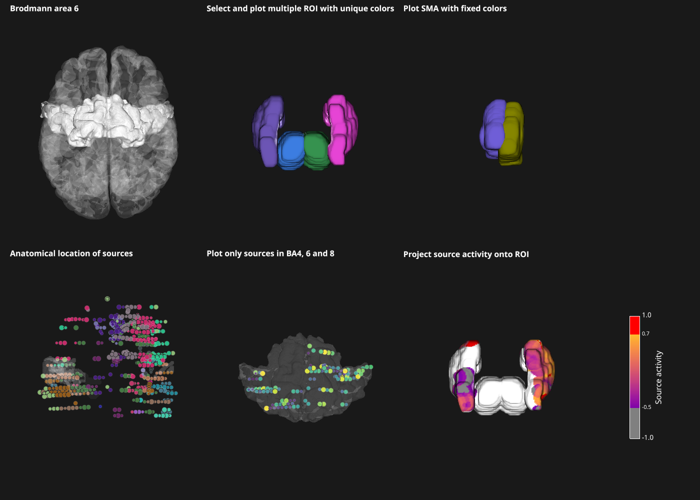

Region Of Interest (ROI) object¶
This example illustrate the main functionalities and inputs of the roi object i.e :

- Use either the Brodmann, AAL or Talairach atlases and select ROI from it
- Color control of ROI
- Analyse source’s anatomical location using an RoiObj
- Project source’s activity onto ROI
import numpy as np
from visbrain.objects import RoiObj, ColorbarObj, SceneObj, SourceObj, BrainObj
from visbrain.io import download_file, path_to_visbrain_data, read_nifti
"""Get the path to Visbrain data and download deep sources
"""
vb_path = path_to_visbrain_data()
mat = np.load(download_file('xyz_sample.npz'))
xyz, subjects = mat['xyz'], mat['subjects']
data = np.random.uniform(low=-1., high=1., size=(xyz.shape[0],))
# =============================================================================
# MAIN SCENE
# =============================================================================
print("-> Create a scene. By default, we fix the top view of the camera")
CAM_STATE = dict(azimuth=0, # azimuth angle
elevation=90, # elevation angle
scale_factor=200 * 100,
distance=800 * 100,
)
CBAR_STATE = dict(cbtxtsz=12, txtsz=10., width=.1, cbtxtsh=3.,
rect=(-.3, -2., 1., 4.))
sc = SceneObj(camera_state=CAM_STATE, bgcolor=(.1, .1, .1), size=(1400, 1000))
# =============================================================================
# FIND INDEX OF AN ROI
# =============================================================================
"""Here, we illustrate how to find the integer index of the ROI to plot
"""
# Method 1 : save all ROI in an excel file and search manually the ROI
roi_to_find1 = RoiObj('brodmann') # Use Brodmann areas
ref_brod = roi_to_find1.get_labels(vb_path) # Save Brodmann
roi_to_find1('aal') # Switch to AAL
ref_aal = roi_to_find1.get_labels(vb_path) # Save AAL
roi_to_find1('talairach') # Switch to Talairach
ref_tal = roi_to_find1.get_labels(vb_path) # Save Talairach
# Method 2 : use the `where_is` method
roi_to_find1('brodmann') # Switch to Brodmann
idx_ba6 = roi_to_find1.where_is('BA6') # Find only BA6
print(ref_brod.loc[idx_ba6])
roi_to_find1('aal') # Switch to AAL
idx_sma = roi_to_find1.where_is(['Supp Motor Area', '(L)'], union=False)
# =============================================================================
# BRAIN + BA6
# =============================================================================
print('\n-> Plot brodmann area 6')
b_obj = BrainObj('B1')
roi_brod = RoiObj('brodmann')
idx_ba6 = roi_brod.where_is('BA6')
roi_brod.select_roi(select=idx_ba6)
roi_brod.get_labels(save_to_path=vb_path) # print available brodmann labels
sc.add_to_subplot(roi_brod, row=0, col=0, title='Brodmann area 6')
sc.add_to_subplot(b_obj, row=0, col=0, use_this_cam=True)
# =============================================================================
# MULTIPLE ROI + UNIQUE COLORS
# =============================================================================
print('\n-> Select and plot multiple ROI with random unique colors')
roi_aal = RoiObj('aal')
roi_aal.select_roi(select=[29, 30, 77, 78], unique_color=True, smooth=11)
roi_aal.get_labels(save_to_path=vb_path) # save available AAL labels
sc.add_to_subplot(roi_aal, row=0, col=1,
title='Select and plot multiple ROI with unique colors')
# =============================================================================
# CUSTOM ROI + FIXED COLORS
# =============================================================================
print("\n-> Use a custom roi_object and plot dorsal and ventral thalamus with "
"fixed colors")
# Download the MIST_ROI.zip archive. See the README inside the archive
download_file('MIST_ROI.zip', unzip=True)
nifti_file = path_to_visbrain_data('MIST_ROI.nii.gz')
csv_file = path_to_visbrain_data('MIST_ROI.csv')
# Read the .csv file :
arr = np.genfromtxt(csv_file, delimiter=';', dtype=str)
# Get column names, labels and index :
column_names = arr[0, :]
arr = np.delete(arr, 0, 0)
n_roi = arr.shape[0]
roi_index = arr[:, 0].astype(int)
roi_labels = arr[:, [1, 2]].astype(object)
# Build the struct array :
label = np.zeros(n_roi, dtype=[('label', object), ('name', object)])
label['label'] = roi_labels[:, 0]
label['name'] = roi_labels[:, 1]
# Get the volume and the hdr transformation :
vol, _, hdr = read_nifti(nifti_file, hdr_as_array=True)
# Define the ROI object and save it :
roi_custom = RoiObj('mist_roi', vol=vol, labels=label, index=roi_index,
hdr=hdr)
# Find thalamus entries :
idx_thalamus = roi_custom.where_is('THALAMUS')
colors = {55: 'slateblue', 56: 'olive', 63: 'darkred', 64: '#ab4642'}
roi_custom.select_roi(idx_thalamus, smooth=11, roi_to_color=colors)
sc.add_to_subplot(roi_custom, row=0, col=2,
title='Plot dorsal and ventral thalamus with fixed colors')
# =============================================================================
# ANATOMICAL LOCATION OF SOURCES
# =============================================================================
print('\n-> Anatomical location of sources using an ROI object')
# Define the ROI object :
roi_tal = RoiObj('talairach')
roi_tal.select_roi(select=[681, 682, 808, 809])
roi_tal.translucent = True
roi_tal.get_labels(save_to_path=vb_path) # save available Talairach labels
# Define a source object :
s_obj = SourceObj('FirstSources', xyz, data=data)
analysis = s_obj.analyse_sources(roi_tal)
s_obj.color_sources(analysis=analysis, color_by='gyrus')
sc.add_to_subplot(s_obj, row=1, col=0,
title='Anatomical location of sources')
sc.add_to_subplot(roi_tal, row=1, col=0, use_this_cam=True)
# =============================================================================
# SELECT SOURCES INSIDE ROI'S
# =============================================================================
print('\n-> Select only sources inside BA 4, 6 and 8')
# Define the ROI object :
roi_brod_2 = RoiObj('brodmann')
roi_brod_2.select_roi(select=[4, 6, 8])
roi_brod_2.translucent = True
# Define a source object :
s_obj_2 = SourceObj('SecondSources', xyz, data=data)
analysis = s_obj_2.analyse_sources(roi_brod_2, distance=20.,
keep_only=['BA4', 'BA6', 'BA8'])
s_obj_2.color_sources(data=data)
sc.add_to_subplot(s_obj_2, row=1, col=1,
title='Plot only sources in BA4, 6 and 8')
sc.add_to_subplot(roi_brod_2, row=1, col=1, use_this_cam=True)
# =============================================================================
# CORTICAL PROJECTION OF SOURCE'S ACTIVITY
# =============================================================================
print("\n-> Project source's activity onto ROI")
# Define the ROI object :
roi_brod_3 = RoiObj('aal')
roi_brod_3.select_roi(select=[29, 30, 77, 78], smooth=11)
# Define a source object :
s_obj_3 = SourceObj('SecondSources', xyz, data=data)
roi_brod_3.project_sources(s_obj_3, cmap='plasma', clim=(-1., 1.), vmin=-.5,
vmax=.7, under='gray', over='red')
cb_brod_3 = ColorbarObj(roi_brod_3, cblabel='Source activity', **CBAR_STATE)
sc.add_to_subplot(roi_brod_3, row=1, col=2,
title="Project source activity onto ROI")
sc.add_to_subplot(cb_brod_3, row=1, col=3, width_max=200)
sc.preview()
Total running time of the script: ( 0 minutes 0.000 seconds)